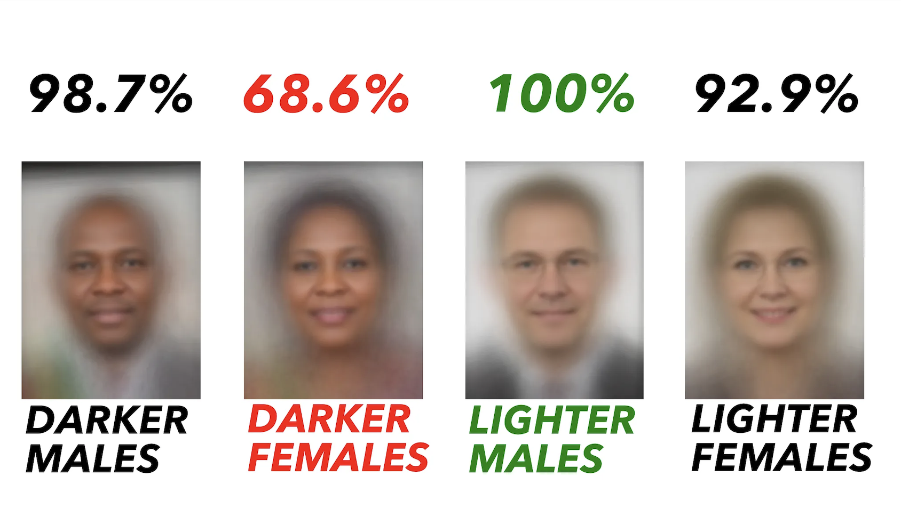

Facial Recognition is a technology that can be used
to idenitfy an individual using facial features either from
videos, photos, or real time.

August 2018 Accuracy on Facial Analysis Pilots Parliament Benchmark
Inequalities With Facial Recognition
Facial recognition software is harmful towards people of color
who are not part of the algorithm which could result in mistaken identity
What can we do about this issue?
Diversifying data sets to include a variety of people could allow us to create software which can identify individual people more reliably.
Improving security camera quality. Cameras have been proven to have faulty
facial recognition when it comes to people with darker skin tones,
often mislabeling people as someone else. This interferes with the daily lives of
people as some institution rely on their technology's implementation to monitor environments.
We should not rely on facial recognition software as the only basis for idenitfying people.
Facial recognition software still fails to identity people accurately, overly relying on this software for identification could have devastating consequences.